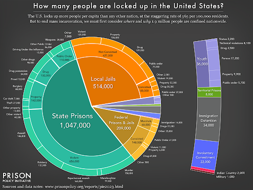
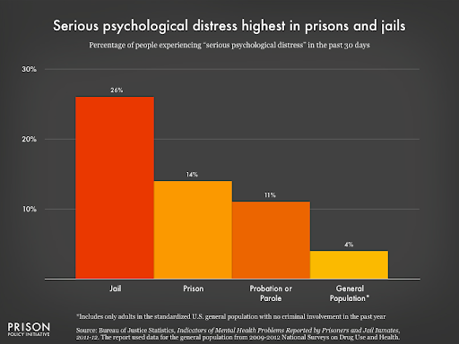
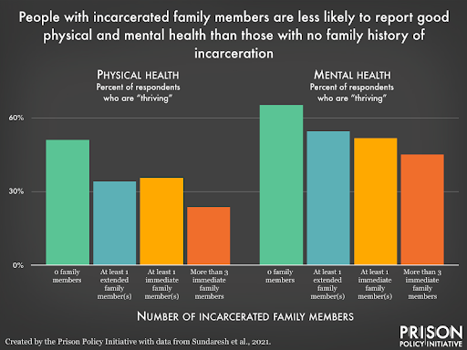
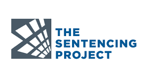

Mass Incarceration
About
About
Mass incarceration refers to the significant increase in the number of individuals imprisoned in the United States over the past few decades. The U.S. has the highest incarceration rate in the world, with a disproportionately high number of people, particularly from marginalized communities, being locked up.
Several factors contribute to the issue of mass incarceration, including the War on Drugs, mandatory minimum sentencing laws, three-strikes laws, and the privatization of prisons. These policies have led to a substantial increase in the prison population, resulting in overcrowded facilities and strains on the criminal justice system.
1. The United States has the highest incarceration rate in the world. As of 2021, over 2.1 million people were incarcerated
in federal, state, and local prisons and jails.
2. The rate of incarceration in the U.S. has increased significantly over the past few decades. In 1970, there were around
200,000 people in jail, meaning the prison population has increased more than tenfold.
3. Racial disparities are evident in the U.S. criminal justice system. African Americans and Hispanics are disproportionately
represented in the incarcerated population. For example, although African Americans make up about 13% of the U.S. population,
they account for approximately 40% of the prison population.
4. Nonviolent offenses contribute significantly to the growth of the prison population. Drug offenses, in particular, have played a
substantial role in the increase in incarceration rates, with many individuals serving lengthy sentences for drug-related crimes.
5. The financial cost of mass incarceration is substantial. Incarceration costs billions of dollars each year, with housing,
healthcare, and staffing expenses. These costs have prompted discussions about alternative approaches that could be more
cost-effective and focus on rehabilitation.

Police Brutality
Police brutality refers to the excessive use of force or violence by law enforcement officers. It can involve physical, verbal, or psychological abuse against individuals, often during arrests or in other encounters with the police.
1. Communities of color, particularly African Americans and Hispanics, are disproportionately affected by police brutality. Numerous
studies and reports have highlighted racial biases and disparities in the use of force by law enforcement officers.
2. The use of body cameras by police officers has gained traction as a potential solution to address police brutality. Body cameras
can objectively record encounters between officers and citizens, increasing accountability and transparency.
3. Calls for police reform and reimagining public safety have gained momentum. Activists and organizations advocate for changes in
policing practices, including improved training, enhanced community policing, and the reallocation of funds towards social programs
that address underlying issues contributing to crime.
Police Brutality Facts
1. In the past year, police shootings have resulted in the deaths of 1,025 individuals.
2. Each year, approximately 900 to 1,100 people are fatally shot by police in the United States.
3. The mental health of Black Americans is negatively affected by police killings of unarmed individuals, leading to over 50 million additional days
of poor mental health annually.
4. Among men aged 25 to 29, fatal police violence ranks the sixth leading cause of death across all racial groups.

Some victims of police brutality/violence
1. George Floyd was a 46-year-old African American man who was killed during an arrest. His death sparked widespread protests and ignited a
global movement against police brutality and racial injustice. The incident began when four police officers responded to a call alleging that
George Floyd had used a counterfeit $20 bill at a local convenience store. During the arrest, Officer Chauvin knelt on George Floyd's neck for
over nine minutes, despite Floyd's repeated pleas that he couldn't breathe.
2. Oscar Grant was a 22-year-old African American man who was fatally shot by a Bay Area Rapid Transit police officer while he was unarmed.
3. Walter Scott was a 50-year-old African American man who was fatally shot by a white police officer. Initially, Slager reported that he had shot
Scott in self-defense after Scott grabbed his Taser during a struggle. However, the video evidence contradicted Slager's account, revealing that
Scott was unarmed and posed no immediate threat to the officer.
4. Akai Gurley was a 28-year-old African American man who was fatally shot by a New York City Police Department officer. The officer had his gun
drawn, which he claimed was due to concerns about potential criminal activity in the area. As Gurley and his girlfriend descended the stairs, Liang
accidentally discharged his weapon, firing a single shot that struck Gurley in the chest.
Race is a problem with policing because the history of the institution started with slave patrol. To fix this, we must treat police officers with “zero tolerance,” like how they treat black people. Police should go under training programs or initiatives implemented by the department to prevent such misconduct and promote equality.
Effects of Covid 19
The United States leads globally in both the number of COVID-19 cases and deaths and the number of incarcerated individuals. The COVID-19 outbreak in prisons has resulted in racial disparities, disproportionately affecting Black and elderly prisoners. Correctional facilities faced challenges such as overcrowding, limited medical resources, and the continuous entry and exit of staff and visitors in controlling the spread of COVID-19.
Most states took limited action to address the pandemic within correctional facilities. Testing, personal protective equipment, reducing populations, and issuing executive orders for vulnerable populations were among the criteria used to assess the response. No state scored above a "D-" in their response. There were higher rates of COVID-19 cases and deaths among prisoners compared to the general population. The case rate among prisoners was found to be 5.5 times higher, and the death rate was higher as well.
Michigan experienced severe outbreaks in several correctional facilities, leading to high infection and death rates among prisoners. Lawsuits were filed alleging violations of the Eighth Amendment due to a failure to follow CDC guidelines. The conditions of the prisons were overcrowding and unsanitary environments that made it impossible to practice social distancing.
COVID-19 exposes the flaws and mismanagement within the prison system, exacerbating the existing racial disparities and human rights abuses and sheds light on the inequities and systemic racism within the criminal justice system, and calls for attention from state crime scholars.
Effects on Mental Health
Mass incarceration can lead to mental health issues such as depressive disorders, anxiety disorders, or PTSD for inmates and their families. They may also feel a disconnection from family, loss of autonomy, boredom, and lack of purpose from overcrowding, solitaire confinement, and witnessing violence.
The journal article "Imprisoned by Empathy: Familial Incarceration and Psychological Distress among African American Men in the National Survey of American Life" explores the relationship between familial incarceration and psychological distress among African American men.
The researchers found that familial incarceration has a significant association with psychological distress among African American men. They discovered that individuals with incarcerated family members, such as fathers, brothers, or close relatives, were more likely to experience symptoms of depression, anxiety, and post-traumatic stress disorder. The study suggests that the experience of familial incarceration can have a profound psychological impact on African American men, contributing to their distress and mental health challenges.
African American men often experience empathy for their incarcerated family members, which can intensify their emotional distress. The empathetic response to the struggles and hardships faced by their incarcerated relatives may lead to an increased psychological burden and internalization of the negative effects of incarceration.
This emphasizes the need for comprehensive support systems and interventions to address the psychological well-being of African American men affected by familial incarceration. By recognizing the emotional toll of having incarcerated family members, policymakers and mental health practitioners can develop targeted strategies to mitigate the adverse effects and provide appropriate support to individuals and families impacted by incarceration.
 There is no easy solution to a problem so complex, but to put an end to mass incarceration and police violence is to not only the abolition of prisons and police but also the creation of alternative systems of care and justice (Purnell). The current system of punishment is rooted in a history of racism and oppression, resulting in a cycle of violence and harm. Purnell suggests that we must invest in community resources such as education, mental health care, housing, and employment opportunities for victims of mass incarceration and police violence. This can address the root causes of crime and provide support for individuals who may be at risk of engaging in harmful behavior. We need to prioritize the needs of victims and aim to repair harm rather than treat them as criminals. Restorative justice involves bringing together those who have been harmed with those who have caused harm to find a resolution that meets the needs of everyone involved.
Efforts to address mass incarceration and police brutality include discussions about police reform, calls to demilitarize the police, de-escalation training, implicit bias training, and the implementation of body cameras for law enforcement officers. Various organizations, activists, and policymakers have been working toward comprehensive criminal justice reform to address these issues and promote a fair and equitable system.
Ultimately, the solution to mass incarceration and police violence is building a society prioritizing care, compassion, and accountability over punishment and retribution. Police and prisons can not be reformed but must be abolished in order to create a more just and equitable society. This, however, is not an easy task, and people must work together to make this issue an issue that we need to solve.
The Sentencing Project is dedicated to promoting fair and compassionate approaches to addressing crime that reduce the reliance on imprisonment and the criminalization of both young people and adults. They advocate for justice in terms of race, ethnicity, economics, and gender. In collaboration with a coalition of supporters, experts, and partners, The Sentencing Project has launched a public education campaign titled "50 Years and a Wake Up: Ending The Mass Incarceration Crisis In America." The primary goal of this campaign is to raise awareness about the critical state of the criminal legal system in the United States. It aims to highlight the devastating consequences of incarceration on communities and families while proposing more effective strategies for preventing crime in our society.
The Black Lives Matter movement, founded in 2013, has been instrumental in raising awareness about police brutality and advocating for systemic changes. The movement seeks to address racial injustice and inequality, specifically in interactions between law enforcement and Black individuals.